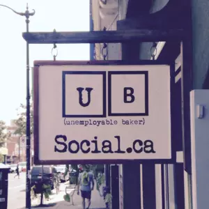
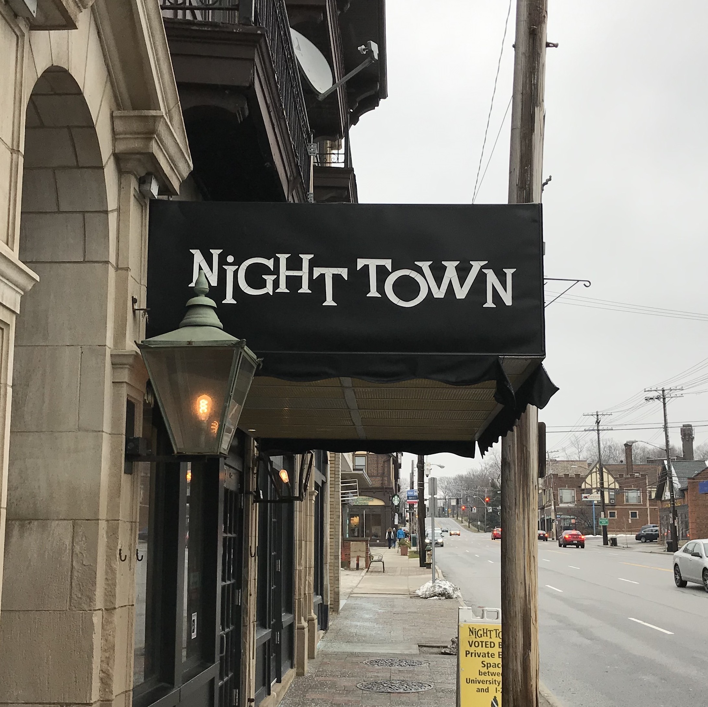

Mateus Schwede
Criador e idealizador do UB Social
Muito prazer, sou Mateus Schwede, Graduado em Análise e Desenvolvimento de Sistemas, Especializando em IA e Machine Learning. Sou grande adepto à utilização de Software Livre, assunto em que abordo em palestras e oficinas práticas de aprendizagem. Também sou integrante de grupo de maratonas de programação, com foco em Python. Construí o site com intuito de disponibilizar todos os resumos que construo, a fim de facilitar o aprendizado aos interessados.

Origem do Nome
O termo UB Social fora inspirado em um pequeno café em Toronto, Canadá. Certo dia, sonhei que estava viajando de metrô e perdi minha mochila ao longo da viagem, onde parei, em um pequeno café, para pedir informações sobre. Segundo uma funcionária, o local se chamava UB Social e a mochila, coincidentemente, estava sob uma das mesas do local. Após acordar, resolvi pesquisar o curioso nome e, para minha surpresa, o café existia e tudo nele era absolutamente igual ao real: A placa na entrada, o ambiente, as cores, móveis, absolutamente tudo! Com tamanha coincidência, fora inadmissível recusar tal nome ao site, em homenagem a esse pequeno café de Toronto. Então, trazendo-o ao contexto do site, UB deriva-se de Umbrella.
Visite o UB Social
Origem do Logotipo
Nossa viagem, a partir de agora, segue para Cleveland, Estados Unidos, a um restaurante chamado Nighttown. Esse pequeno restaurante e casa de shows, com atrações em piano, além do seu requintado bar ao estilo taverna clássica, fechou suas portas por um período no ano de 2020, devido à pandemia de Covid-19. Em uma de suas últimas noites em ativa, um cliente desconhecido deixou uma gorjeta de U$ 3000,00 por uma única bebida. A gorjeta, segundo o cliente, era para ser dividida entre todos os 4 funcionários do local. A identidade visual do site inspira-se no logotipo e temática do restaurante Nighttown. Então, trazendo-o ao contexto do site, o objetivo do logotipo é ilustrar o observador comum contemporâneo, em meio à sociedade ao seu redor.
Visite o NighttownUB Social
Mateus Schwede, 2021